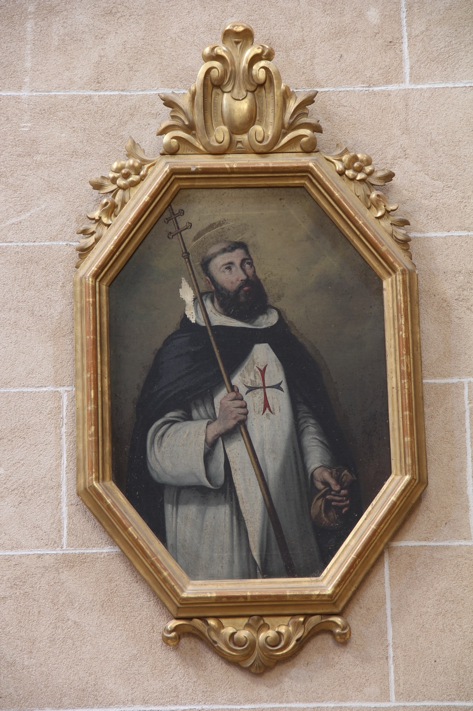

San Juan de Mata (1160-1213) fue un fraile provenzal que fundó la Orden de la Santísima Trinidad y de la Redención de Cautivos, conocida también como la Orden Trinitaria. Hijo de una familia noble, estudió teología en París y fue ordenado sacerdote. Durante la celebración de su primera misa tuvo una visión de Jesús vestido de blanco, con una cruz roja y azul sobre el pecho y con las manos sobre las cabezas de un prisionero cristiano y otro musulmán. Juan la interpretó como un signo divino de que debía fundar una nueva orden religiosa dedicada al rescate de los cristianos cautivos en manos de musulmanes. Después de aquella experiencia, se retiró a meditar y orar en Cerfroid, a unos 80 km de París. Según la tradición trinitaria, allí conoció a san Félix de Valois y juntos fundaron la Orden Trinitaria y el primer monasterio de la orden en aquella población, del que Juan fue el primer superior. Poco después inició una larga serie de viajes a Túnez para rescatar cristianos cautivos dejando a san Félix a cargo del monasterio.
En esta pintura de Agustí Buades i Muntaner (s. XIX), san Juan aparece con barba oscura, un rasgo habitual en su iconografía que ayuda a diferenciarlo de san Félix, representado habitualmente como un hombre de mayor edad. Viste el hábito trinitario: túnica blanca con la cruz azul y roja sobre el pecho, símbolo de la orden, y capa negra. Sostiene un báculo en una mano, símbolo de su cargo de superior del monasterio de Cerfroid, y una bolsa en la otra. Se trata de la bolsa del dinero de los cautivos, otro de los símbolos de la Orden Trinitaria, que representa el dinero procedente de limosnas y donaciones que los trinitarios empleaban para rescatar cristianos cautivos. Este mismo símbolo aparece también en el frontal del altar.